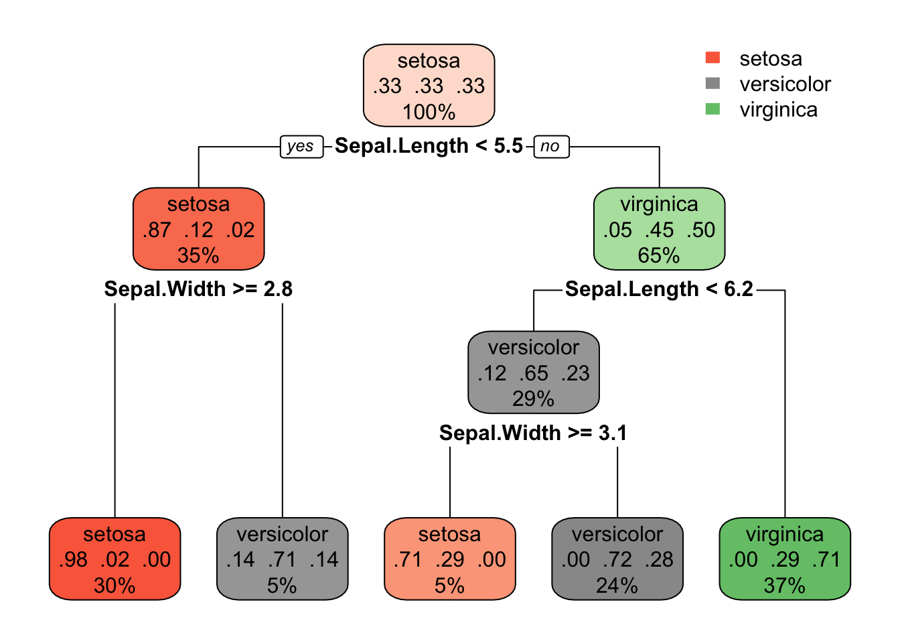
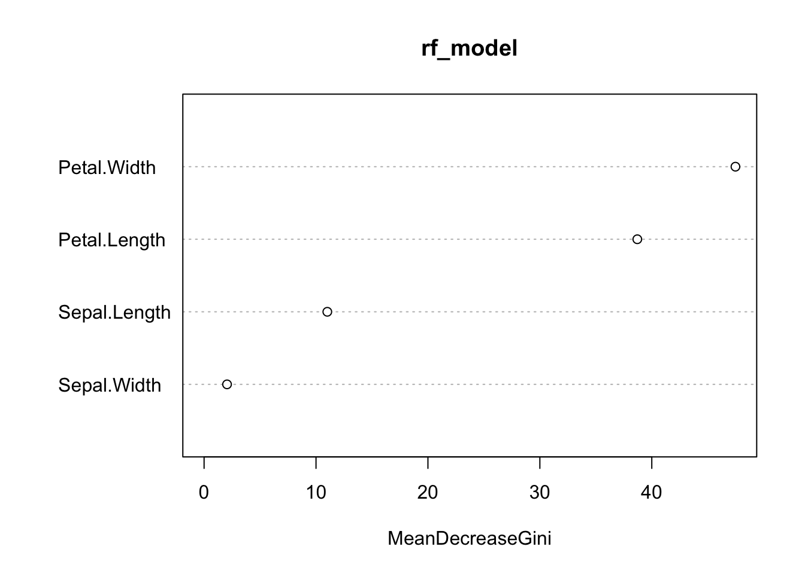

Traditional statistics emphasizes inference—understanding relationships, testing hypotheses, and quantifying uncertainty. Statistical learning (or machine learning) shifts focus toward prediction—building models that accurately predict outcomes for new data.
Both approaches use similar mathematical tools, but the goals differ. In inference, we want to understand the true relationship between variables. In prediction, we want accurate predictions, even if the model does not perfectly capture the underlying mechanism.
22.2 The Overfitting Problem
Models are built to fit training data as closely as possible. A linear regression minimizes squared errors; a logistic regression maximizes likelihood. But models that fit training data too well often predict poorly on new data.
Overfitting occurs when a model captures noise specific to the training data rather than the true underlying pattern. Complex models with many parameters are especially susceptible.
The solution is to evaluate models on data they have not seen—held-out test data or through cross-validation.
22.3 Cross-Validation
Cross-validation estimates how well a model will generalize to new data.
K-fold cross-validation: 1. Split data into k roughly equal parts (folds) 2. For each fold: train on k-1 folds, test on the held-out fold 3. Average performance across all folds
Code
# Simple CV example with linear regressionlibrary(boot)# Generate dataset.seed(42)x <-rnorm(100)y <-2+3*x +rnorm(100)data <-data.frame(x, y)# Fit model and perform CVmodel <-glm(y ~ x, data = data)# 10-fold cross-validationcv_result <-cv.glm(data, model, K =10)cat("CV estimate of prediction error:", round(cv_result$delta[1], 3), "\n")
CV estimate of prediction error: 0.846
Leave-one-out cross-validation (LOOCV) is k-fold with k = n: each observation is held out once. More computationally expensive but lower variance.
22.4 Bias-Variance Tradeoff
Prediction error has two components:
Bias: Error from approximating a complex reality with a simpler model. Simple models have high bias—they may miss important patterns.
Variance: Error from sensitivity to training data. Complex models have high variance—they change substantially with different training samples.
The best predictions come from models that balance bias and variance. As model complexity increases, bias decreases but variance increases. The optimal complexity minimizes total prediction error.
22.5 LOESS: Flexible Non-Parametric Smoothing
LOESS (Locally Estimated Scatterplot Smoothing) fits local regressions to subsets of data, weighted by distance from each point.
Code
# Compare linear regression and LOESSset.seed(123)x <-seq(0, 4*pi, length.out =100)y <-sin(x) +rnorm(100, sd =0.3)plot(x, y, pch =16, col ="gray60", main ="Linear vs LOESS")abline(lm(y ~ x), col ="red", lwd =2)lines(x, predict(loess(y ~ x, span =0.3)), col ="blue", lwd =2)legend("topright", c("Linear", "LOESS"), col =c("red", "blue"), lwd =2)
The span parameter controls smoothness: smaller values fit more locally (more flexible), larger values average more broadly (smoother).
22.6 Classification
When the response is categorical, we have a classification problem rather than regression. The goal is to predict which category an observation belongs to.
Logistic regression produces probabilities that can be converted to class predictions.
Decision trees recursively partition the feature space based on simple rules.
Random forests combine many decision trees for more robust predictions.
22.7 Confusion Matrices
Classification performance is evaluated with a confusion matrix:
Predicted Positive
Predicted Negative
Actual Positive
True Positive (TP)
False Negative (FN)
Actual Negative
False Positive (FP)
True Negative (TN)
Key metrics: - Accuracy: (TP + TN) / Total - Sensitivity (Recall): TP / (TP + FN) — how many positives were caught - Specificity: TN / (TN + FP) — how many negatives were correctly identified - Precision: TP / (TP + FP) — among positive predictions, how many were correct
22.8 Decision Trees
Decision trees make predictions by asking a series of yes/no questions about the features:
Code
library(rpart)library(rpart.plot)# Build a simple decision treedata(iris)tree_model <-rpart(Species ~ Sepal.Length + Sepal.Width, data = iris)rpart.plot(tree_model)

Trees are interpretable but prone to overfitting. Pruning (removing branches) or using ensembles helps.
22.9 Random Forests
Random forests improve on single trees by: 1. Building many trees on bootstrap samples (bagging) 2. Using a random subset of features at each split 3. Averaging predictions across all trees
Code
library(randomForest)rf_model <-randomForest(Species ~ ., data = iris, ntree =100)rf_model
Call:
randomForest(formula = Species ~ ., data = iris, ntree = 100)
Type of random forest: classification
Number of trees: 100
No. of variables tried at each split: 2
OOB estimate of error rate: 6%
Confusion matrix:
setosa versicolor virginica class.error
setosa 50 0 0 0.00
versicolor 0 47 3 0.06
virginica 0 6 44 0.12
Code
# Variable importancevarImpPlot(rf_model)

22.10 Practical Workflow
A typical statistical learning workflow:
Split data into training and test sets
Explore the training data
Build candidate models with different algorithms or parameters
Evaluate using cross-validation on training data
Select the best model
Final evaluation on held-out test data
Report honest estimates of performance
Never use test data for model building or selection—that defeats the purpose of holding it out.
22.11 When to Use Statistical Learning
Statistical learning excels when: - Prediction is the primary goal - Relationships are complex or non-linear - You have substantial data - Interpretability is less critical
Traditional statistical methods may be preferable when: - Understanding relationships matters more than prediction - Sample sizes are small - You need confidence intervals and hypothesis tests - Interpretability is essential
Source Code
# Statistical Learning {#sec-statistical-learning}```{r}#| echo: false#| message: falselibrary(tidyverse)theme_set(theme_minimal())```## From Inference to PredictionTraditional statistics emphasizes inference—understanding relationships, testing hypotheses, and quantifying uncertainty. Statistical learning (or machine learning) shifts focus toward prediction—building models that accurately predict outcomes for new data.Both approaches use similar mathematical tools, but the goals differ. In inference, we want to understand the true relationship between variables. In prediction, we want accurate predictions, even if the model does not perfectly capture the underlying mechanism.## The Overfitting ProblemModels are built to fit training data as closely as possible. A linear regression minimizes squared errors; a logistic regression maximizes likelihood. But models that fit training data too well often predict poorly on new data.**Overfitting** occurs when a model captures noise specific to the training data rather than the true underlying pattern. Complex models with many parameters are especially susceptible.The solution is to evaluate models on data they have not seen—held-out test data or through cross-validation.## Cross-ValidationCross-validation estimates how well a model will generalize to new data.**K-fold cross-validation**:1. Split data into k roughly equal parts (folds)2. For each fold: train on k-1 folds, test on the held-out fold3. Average performance across all folds```{r}#| fig-width: 7#| fig-height: 5# Simple CV example with linear regressionlibrary(boot)# Generate dataset.seed(42)x <-rnorm(100)y <-2+3*x +rnorm(100)data <-data.frame(x, y)# Fit model and perform CVmodel <-glm(y ~ x, data = data)# 10-fold cross-validationcv_result <-cv.glm(data, model, K =10)cat("CV estimate of prediction error:", round(cv_result$delta[1], 3), "\n")```**Leave-one-out cross-validation (LOOCV)** is k-fold with k = n: each observation is held out once. More computationally expensive but lower variance.## Bias-Variance TradeoffPrediction error has two components:**Bias**: Error from approximating a complex reality with a simpler model. Simple models have high bias—they may miss important patterns.**Variance**: Error from sensitivity to training data. Complex models have high variance—they change substantially with different training samples.The best predictions come from models that balance bias and variance. As model complexity increases, bias decreases but variance increases. The optimal complexity minimizes total prediction error.## LOESS: Flexible Non-Parametric Smoothing**LOESS** (Locally Estimated Scatterplot Smoothing) fits local regressions to subsets of data, weighted by distance from each point.```{r}#| fig-width: 7#| fig-height: 5# Compare linear regression and LOESSset.seed(123)x <-seq(0, 4*pi, length.out =100)y <-sin(x) +rnorm(100, sd =0.3)plot(x, y, pch =16, col ="gray60", main ="Linear vs LOESS")abline(lm(y ~ x), col ="red", lwd =2)lines(x, predict(loess(y ~ x, span =0.3)), col ="blue", lwd =2)legend("topright", c("Linear", "LOESS"), col =c("red", "blue"), lwd =2)```The **span** parameter controls smoothness: smaller values fit more locally (more flexible), larger values average more broadly (smoother).## ClassificationWhen the response is categorical, we have a classification problem rather than regression. The goal is to predict which category an observation belongs to.**Logistic regression** produces probabilities that can be converted to class predictions.**Decision trees** recursively partition the feature space based on simple rules.**Random forests** combine many decision trees for more robust predictions.## Confusion MatricesClassification performance is evaluated with a **confusion matrix**:|| Predicted Positive | Predicted Negative ||:--|:--:|:--:|| Actual Positive | True Positive (TP) | False Negative (FN) || Actual Negative | False Positive (FP) | True Negative (TN) |Key metrics:- **Accuracy**: (TP + TN) / Total- **Sensitivity** (Recall): TP / (TP + FN) — how many positives were caught- **Specificity**: TN / (TN + FP) — how many negatives were correctly identified- **Precision**: TP / (TP + FP) — among positive predictions, how many were correct## Decision TreesDecision trees make predictions by asking a series of yes/no questions about the features:```{r}#| fig-width: 7#| fig-height: 5library(rpart)library(rpart.plot)# Build a simple decision treedata(iris)tree_model <-rpart(Species ~ Sepal.Length + Sepal.Width, data = iris)rpart.plot(tree_model)```Trees are interpretable but prone to overfitting. Pruning (removing branches) or using ensembles helps.## Random ForestsRandom forests improve on single trees by:1. Building many trees on bootstrap samples (bagging)2. Using a random subset of features at each split3. Averaging predictions across all trees```{r}library(randomForest)rf_model <-randomForest(Species ~ ., data = iris, ntree =100)rf_model# Variable importancevarImpPlot(rf_model)```## Practical WorkflowA typical statistical learning workflow:1. **Split data** into training and test sets2. **Explore** the training data3. **Build candidate models** with different algorithms or parameters4. **Evaluate** using cross-validation on training data5. **Select** the best model6. **Final evaluation** on held-out test data7. **Report** honest estimates of performanceNever use test data for model building or selection—that defeats the purpose of holding it out.## When to Use Statistical LearningStatistical learning excels when:- Prediction is the primary goal- Relationships are complex or non-linear- You have substantial data- Interpretability is less criticalTraditional statistical methods may be preferable when:- Understanding relationships matters more than prediction- Sample sizes are small- You need confidence intervals and hypothesis tests- Interpretability is essential